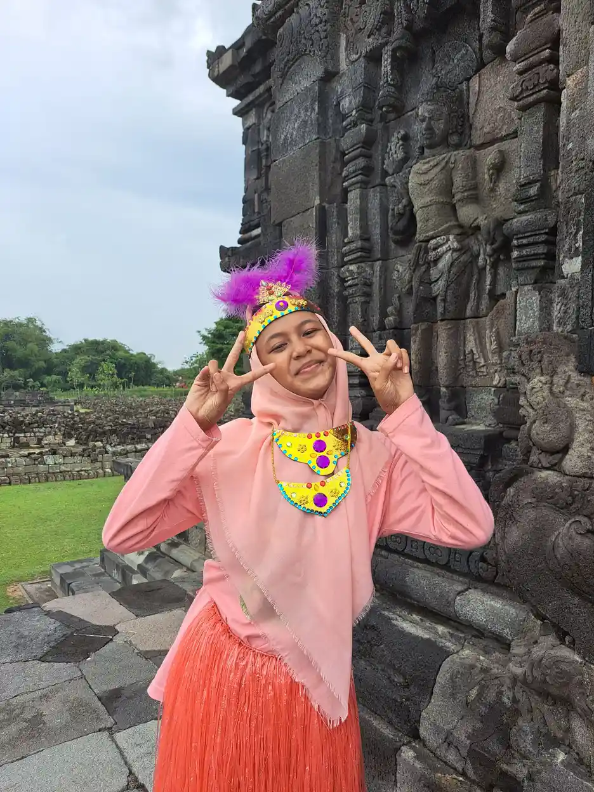
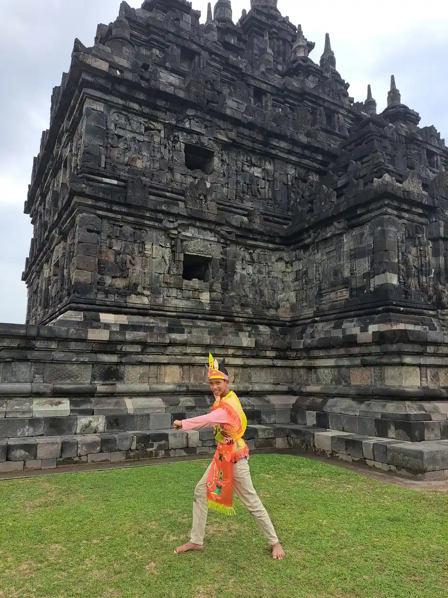
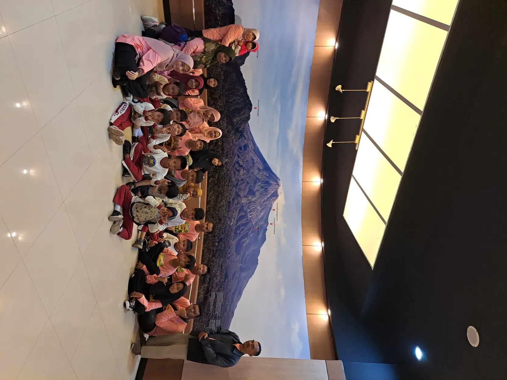

Jawaban singkat: Special Olympics Indonesia (SOIna) adalah organisasi nirlaba yang terakreditasi oleh Special Olympics International untuk menyelenggarakan pelatihan dan kompetisi olahraga sepanjang tahun bagi penyandang disabilitas intelektual. Gerakan globalnya berawal dari Camp Shriver yang didirikan Eunice Kennedy Shriver pada awal 1960-an. Anak bisa bergabung melalui klub SOIna di sekolah, SLB, atau komunitas, mulai dari program bermain Young Athletes untuk usia 2 sampai 7 tahun.
Daftar Isi
- Apa itu Special Olympics?
- Sejarah singkat gerakan Special Olympics
- Mengenal Special Olympics Indonesia (SOIna)
- Cabang olahraga dan cara bertanding
- Program Unified Sports, Young Athletes, dan Healthy Athletes
- Perbedaan Special Olympics dan Paralimpiade
- Cara anak ikut SOIna
- Manfaat olahraga bagi anak dengan disabilitas intelektual
- Peran keluarga dan sekolah
- Pertanyaan yang sering diajukan
Apa Itu Special Olympics?
Special Olympics adalah gerakan olahraga internasional untuk anak dan orang dewasa dengan disabilitas intelektual. Menurut halaman FAQ resmi Special Olympics, misinya adalah menyediakan pelatihan dan kompetisi olahraga sepanjang tahun dalam berbagai cabang bergaya olimpiade. Tujuannya agar atlet terus punya kesempatan membangun kebugaran, menunjukkan keberanian, merasakan kegembiraan, dan berbagi persahabatan dengan keluarga, sesama atlet, serta masyarakat.
Skala gerakan ini besar. Halaman olahraga Special Olympics menyebut lebih dari empat juta atlet dan mitra Unified, serta satu juta pelatih dan relawan, di lebih dari 200 program terakreditasi. Organisasi ini menyelenggarakan lebih dari 30 cabang olahraga bergaya olimpiade dan lebih dari 100.000 pertandingan setiap tahun. Wikipedia juga mencatat bahwa Special Olympics diakui oleh Komite Olimpiade Internasional (IOC).
Yang membuat Special Olympics berbeda adalah sudut pandangnya. Gerakan ini tidak menunggu anak "cukup mampu" untuk berolahraga. Justru olahraga dipakai sebagai jalan agar anak dengan disabilitas intelektual terlihat, dihargai, dan terlibat di tengah masyarakat. Bagi keluarga, ini kabar baik: anak tidak perlu menjadi juara dulu untuk mendapat tempat di lapangan.
Istilah disabilitas intelektual merujuk pada keterbatasan fungsi intelektual dan perilaku adaptif yang muncul pada masa perkembangan. Di Indonesia, istilah lama yang masih sering dipakai adalah tunagrahita. SOIna sendiri memilih sebutan yang lebih menghargai, yaitu Orang Bertalenta Khusus (OBK), seperti tertulis di situs resmi SOIna.
Sejarah Singkat Gerakan Special Olympics
Cerita Special Olympics berawal dari sebuah halaman rumah. Special Olympics International menuliskan bahwa Eunice Kennedy Shriver mendirikan Camp Shriver pada awal 1960-an di halaman belakang rumahnya di Maryland, Amerika Serikat. Ia mengundang anak-anak dengan disabilitas intelektual untuk berenang, menendang bola, bermain basket, dan menunggang kuda bersama pendamping muda.
Menurut halaman sejarah SOIna, kegiatan awal itu melibatkan 34 anak dan 26 pendamping. Para pendamping yang semula ragu akhirnya melihat bahwa anak-anak tersebut bukan "sulit" atau "tidak bisa diajari". Mereka hanya ingin bersenang-senang, sama seperti anak lain. Pengalaman itu mengubah cara pandang banyak orang tentang kemampuan anak dengan disabilitas intelektual.
Dari Camp Shriver, gagasan itu berkembang menjadi ajang olahraga yang lebih besar. Wikipedia mencatat bahwa Special Olympics pertama digelar pada 20 Juli 1968 di Soldier Field, Chicago. Sejak itu Special Olympics World Games digelar bergantian antara musim panas dan musim dingin, sementara kompetisi lokal dan nasional berlangsung sepanjang tahun di banyak negara.
Satu warisan yang sampai sekarang diucapkan atlet di seluruh dunia adalah janji atlet Special Olympics: "Let me win. But if I cannot win, let me be brave in the attempt." SOIna menerjemahkannya sebagai "Biarkan kami menang, tapi apabila kami tidak menang, berilah kami kesempatan untuk mencobanya." Janji ini menegaskan bahwa keberanian mencoba sama berharganya dengan medali.

Mengenal Special Olympics Indonesia (SOIna)
Di Indonesia, gerakan ini dijalankan oleh Special Olympics Indonesia atau SOIna. Situs resmi SOIna menjelaskan bahwa SOIna adalah organisasi nirlaba yang diakui pemerintah dan telah mendapat akreditasi dari Special Olympics International (SOI). Tugasnya menyelenggarakan pelatihan dan kompetisi olahraga, serta program non-olahraga, bagi penyandang disabilitas intelektual di Indonesia.
Pengakuan itu juga disebut pihak pemerintah. Dalam berita Pemerintah Provinsi Jawa Tengah tentang pembentukan pengurus SOIna di Kabupaten Blora, Ketua SOIna Jawa Tengah menyatakan SOIna adalah satu-satunya organisasi di Indonesia yang terakreditasi Special Olympics International untuk pelatihan dan kompetisi olahraga bagi warga tunagrahita. Kementerian Sosial memberitakan bahwa pada Agustus 2021 SOIna memperingati hari jadinya yang ke-32.
Struktur organisasi
SOIna bekerja berjenjang, dari pengurus pusat sampai pengurus di provinsi dan kabupaten/kota. Contohnya, berita Jawa Tengah di atas menyebut pembentukan pengurus SOIna di tingkat kabupaten. Halaman sejarah SOIna memuat susunan pengurus periode 2023-2027 dengan Ketua Umum Warsito Ellwein. Di dalamnya ada direktur untuk olahraga, Healthy Athletes, Young Athletes, kerelawanan, dukungan keluarga, dan kebudayaan.
Di tingkat paling dekat dengan anak, ada SOIna Klub. Menurut halaman SOIna Klub, klub ini melibatkan atlet, pelatih atau guru, keluarga, relawan, masyarakat, dan lembaga pemerintah maupun swasta. SOIna menegaskan bahwa sekolah dan komunitas adalah inti gerakan Special Olympics di Indonesia, dan pada saat halaman itu kami baca, klub SOIna tersebar di 204 titik lokasi.
Visi dan kompetisi nasional
Visi SOIna adalah memberi kesempatan kepada penyandang disabilitas intelektual untuk menjadi warga negara yang berguna, produktif, diterima, dihargai, dan diakui kesetaraannya. Salah satu ajang nasionalnya adalah Pekan Special Olympics Nasional (PESONAS). Halaman PESONAS II NTT 2026 menjelaskan bahwa ajang empat tahunan di Kupang ini juga menjadi persiapan menuju Special Olympics World Games di Santiago, Chile, tahun 2027.
Cabang Olahraga dan Cara Bertanding
Halaman cabang olahraga SOIna menyebut 18 cabang olahraga individu dan beregu yang dikembangkan, dengan konsep tradisional dan unified. Daftarnya mencakup renang, atletik, bola basket, sepak bola, bulu tangkis, tenis meja, bocce, bola voli, senam artistik, senam ritmik, futsal, bola tangan, boling, floor hockey, floorball, Motor Activity Training Program, snowshoeing, dan dance sport.
Bagi orang tua, pilihan cabang sebaiknya berangkat dari minat dan kenyamanan anak. Anak yang suka air mungkin senang renang. Anak yang suka berlari bisa dikenalkan atletik. Anak yang belum nyaman dengan permainan cepat bisa mulai dari bocce atau boling yang ritmenya lebih tenang. Latihan motorik kasar di rumah, seperti melempar, menangkap, dan melompat, dapat menjadi bekal awal.
Pembagian divisi yang adil
Special Olympics punya cara bertanding yang khas. Menurut FAQ Special Olympics, lewat proses yang disebut divisioning, atlet bertanding melawan atlet lain dengan jenis kelamin, usia, dan kemampuan yang serupa. Wikipedia menambahkan bahwa medali diberikan untuk juara satu sampai tiga, sedangkan pita penghargaan diberikan untuk peringkat empat sampai delapan.
Sistem ini penting bagi anak dengan disabilitas intelektual. Anak tidak dihadapkan pada lawan yang jauh lebih kuat sehingga merasa kalah sebelum mulai. Setiap atlet mendapat kesempatan yang bermakna untuk berusaha dan diakui. Bagi anak dengan kebutuhan dukungan yang lebih besar, SOIna sedang merancang Motor Activity Training Program, yaitu kegiatan olahraga yang disesuaikan dengan kemampuan atlet dengan disabilitas intelektual dan perkembangan yang berat.

Program Unified Sports, Young Athletes, dan Healthy Athletes
Special Olympics tidak hanya soal pertandingan. Tiga program pendukungnya, yang juga tercantum di situs SOIna, menjangkau anak dan keluarga lebih luas.
Unified Sports: satu tim, satu tujuan
Unified Sports menyatukan orang dengan dan tanpa disabilitas intelektual dalam satu tim. Prinsipnya sederhana: berlatih dan bermain bersama adalah jalan cepat menuju persahabatan dan saling memahami. Anggota tim memiliki usia dan kemampuan yang setara, sehingga latihan tetap seru dan pertandingan tetap menantang. SOIna memakai prinsip yang sama, sejalan dengan semangat inklusi sosial.
Young Athletes: bermain sejak usia dini
Young Athletes adalah program bermain untuk anak usia 2 sampai 7 tahun, dengan maupun tanpa disabilitas intelektual. Anak dikenalkan pada keterampilan dasar seperti berlari, menendang, dan melempar, sambil belajar berbagi, bergiliran, dan mengikuti arahan. Special Olympics melaporkan bahwa anak dengan disabilitas intelektual yang mengikuti Young Athletes mengembangkan keterampilan motorik lebih dari dua kali lebih cepat dibanding yang tidak ikut. SOIna juga menjalankan program ini.
Healthy Athletes: pemeriksaan kesehatan gratis
Sejak 1997, Healthy Athletes menawarkan pemeriksaan kesehatan dan edukasi gratis bagi atlet Special Olympics. Programnya mencakup delapan disiplin, antara lain pemeriksaan umum (MedFest), mata (Opening Eyes), pendengaran (Healthy Hearing), gigi (Special Smiles), dan kebugaran (FUNfitness). SOIna menyatakan pemeriksaan di Indonesia juga dilakukan dalam delapan disiplin.
| Program | Untuk siapa | Isi kegiatan |
|---|---|---|
| Pelatihan dan kompetisi olahraga | Atlet dengan disabilitas intelektual, minimal 8 tahun (ketentuan SOI) | Latihan sepanjang tahun dan pertandingan dengan divisi setara |
| Unified Sports | Atlet dengan dan tanpa disabilitas intelektual dengan usia dan kemampuan setara | Berlatih dan bertanding dalam satu tim |
| Young Athletes | Anak usia 2 sampai 7 tahun, dengan maupun tanpa disabilitas intelektual | Permainan untuk keterampilan dasar seperti berlari, menendang, dan melempar |
| Healthy Athletes | Atlet Special Olympics | Pemeriksaan kesehatan dan edukasi gratis dalam delapan disiplin |
| Family Support Network | Orang tua dan saudara kandung atlet | Family Leader, Family Health Forum, dan Siblings Engagement |
Perbedaan Special Olympics dan Paralimpiade
Banyak orang tua mengira Special Olympics sama dengan Paralimpiade. Keduanya memang sama-sama gerakan olahraga bagi penyandang disabilitas, tetapi tujuan dan cara kerjanya berbeda. Memahami perbedaannya membantu keluarga memilih jalur yang paling sesuai dengan kebutuhan dan minat anak.
Paralimpiade adalah olahraga prestasi tingkat elite. Menurut Komite Paralimpiade Internasional (IPC), klasifikasi adalah inti gerakan Paralimpiade untuk memastikan hasil pertandingan ditentukan oleh faktor selain hambatan atlet. Hambatan intelektual termasuk salah satu jenis hambatan yang memenuhi syarat, tetapi setiap federasi cabang olahraga menentukan sendiri hambatan mana yang mereka layani. Di Indonesia, ajang setingkat nasionalnya dikenal sebagai Peparnas.
Special Olympics, sebaliknya, khusus untuk penyandang disabilitas intelektual dan sengaja terbuka bagi semua tingkat kemampuan. Fokusnya adalah pelatihan sepanjang tahun, kesehatan, dan penerimaan sosial, bukan hanya rekor. Seorang anak bisa saja aktif di keduanya bila memenuhi syarat, tetapi bagi kebanyakan anak, Special Olympics adalah pintu masuk yang lebih ramah.
| Aspek | Special Olympics | Paralimpiade |
|---|---|---|
| Peserta | Penyandang disabilitas intelektual | Atlet dengan jenis hambatan yang memenuhi syarat, termasuk hambatan fisik, penglihatan, dan intelektual di cabang tertentu |
| Tingkat kemampuan | Semua tingkat kemampuan diajak ikut | Atlet prestasi yang lolos seleksi dan klasifikasi |
| Cara mengelompokkan atlet | Divisi berdasarkan jenis kelamin, usia, dan kemampuan | Klasifikasi per cabang olahraga sesuai aturan federasi |
| Penghargaan | Medali juara 1 sampai 3, pita untuk peringkat 4 sampai 8 | Medali untuk juara 1 sampai 3 |
| Penyelenggara di Indonesia | SOIna, terakreditasi Special Olympics International | Komite Paralimpiade Nasional (NPC) Indonesia |
Cara Anak Ikut SOIna
Tidak ada satu pintu tunggal untuk bergabung, karena kegiatan SOIna berjalan lewat pengurus daerah, klub, sekolah, dan komunitas. Kabar baiknya, jalur yang paling dekat sering kali justru sekolah anak sendiri. Berikut langkah yang bisa orang tua tempuh.
- Pahami syarat usia. Special Olympics International menetapkan atlet minimal berusia 8 tahun dan teridentifikasi memiliki disabilitas intelektual atau hambatan kognitif oleh lembaga atau tenaga profesional. Anak usia 2 sampai 7 tahun dapat mulai dari Young Athletes. Hasil asesmen tingkat kebutuhan dukungan dari psikolog atau dokter bisa membantu.
- Tanyakan ke sekolah atau SLB. Banyak kegiatan SOIna berbasis sekolah. Tanyakan kepada guru olahraga atau kepala sekolah apakah sekolah sudah memiliki klub SOIna atau pernah mengirim atlet.
- Hubungi pengurus SOIna daerah. Cari pengurus SOIna di provinsi atau kabupaten/kota Anda. Bila belum ketemu, hubungi sekretariat SOIna pusat lewat kontak di situs resminya untuk diarahkan ke pengurus terdekat.
- Pilih cabang yang sesuai minat. Diskusikan dengan pelatih cabang mana yang paling menyenangkan dan aman untuk anak. Mulailah dari satu cabang dulu.
- Lengkapi pemeriksaan kesehatan. Ikuti arahan pengurus soal pemeriksaan kesehatan sebelum latihan rutin. Pada ajang tertentu, Healthy Athletes juga menyediakan pemeriksaan gratis.
- Datang ke latihan secara rutin. Konsistensi lebih penting daripada intensitas. Dampingi anak di awal, lalu beri ruang agar ia membangun kedekatan dengan pelatih dan teman.
Bila anak belum siap bertanding, tidak apa-apa. Banyak klub juga menyelenggarakan kegiatan non-olahraga seperti seni dan budaya. SOIna menyebut klub dimaksudkan menjadi ruang yang aman dan menyenangkan agar atlet tetap aktif, bahkan setelah usia sekolah.
Manfaat Olahraga bagi Anak dengan Disabilitas Intelektual
Aktivitas fisik penting bagi semua anak, termasuk anak dengan disabilitas. WHO menjelaskan bahwa pedoman aktivitas fisiknya juga berlaku bagi orang yang hidup dengan disabilitas, dan menegaskan bahwa aktivitas fisik sekecil apa pun lebih baik daripada tidak sama sekali. CDC merekomendasikan anak usia 6 sampai 17 tahun bergerak dengan intensitas sedang hingga berat minimal 60 menit setiap hari.
Bagi anak dengan disabilitas intelektual, olahraga yang terstruktur menawarkan lebih dari kebugaran. Latihan yang berulang dan bertahap memberi kesempatan untuk belajar mengikuti instruksi, menunggu giliran, dan menyelesaikan tugas. Hal ini sejalan dengan temuan Young Athletes yang dilaporkan Special Olympics, yaitu peningkatan keterampilan motorik serta keterampilan sosial dan belajar menurut orang tua dan guru.
- Kebugaran dan kesehatan: gerak teratur membantu kekuatan otot, keseimbangan, dan daya tahan.
- Keterampilan sosial: bermain dalam tim melatih kerja sama, komunikasi, dan menerima kemenangan maupun kekalahan.
- Rasa percaya diri: setiap kemajuan kecil yang diakui pelatih dan keluarga menumbuhkan keyakinan bahwa "aku bisa".
- Rutinitas: jadwal latihan yang tetap membantu anak memahami struktur waktu dan kebiasaan sehat.
- Penerimaan masyarakat: Unified Sports mempertemukan anak dengan teman sebaya tanpa disabilitas sehingga prasangka berkurang.
Manfaat ini tidak muncul seketika dan tidak sama pada setiap anak. Bila anak memiliki kondisi kesehatan tertentu, misalnya pada sebagian anak dengan Down syndrome, konsultasikan dulu jenis dan intensitas olahraga yang aman dengan dokter. Untuk anak dengan hambatan gerak, terapi fisik bisa berjalan beriringan dengan kegiatan olahraga.

Peran Keluarga dan Sekolah
Keluarga adalah pendukung pertama atlet. Family Support Network SOIna menekankan bahwa banyak penyandang disabilitas intelektual tetap tinggal bersama keluarga hingga dewasa, sehingga dukungan sosial bagi orang tua penting untuk kesehatan mental dan hubungan pengasuhan yang positif. Melalui Family Leader, Family Health Forum, dan Siblings Engagement, SOIna mengajak keluarga saling menguatkan.
Di rumah, peran orang tua tidak harus rumit. Antar anak ke latihan, rayakan usahanya, dan ajak saudara kandungnya ikut menonton atau menjadi mitra Unified. Jaga juga kesehatan diri sendiri. Mengelola stres orang tua sama pentingnya dengan mendampingi anak, karena pendampingan jangka panjang butuh tenaga yang terjaga. Dalam Islam, setiap ikhtiar kecil untuk kebaikan anak adalah amal yang bernilai.
Sekolah juga memegang peran besar. Guru olahraga di SLB maupun sekolah inklusi dapat menjadi penghubung dengan pengurus SOIna, mengadaptasi pelajaran olahraga, dan mengajak siswa tanpa disabilitas menjadi mitra Unified. Pendekatan seperti buddy system di kelas bisa diperluas ke lapangan olahraga.
Di YUKA, kami percaya setiap anak berhak bergerak, bermain, dan dihargai usahanya. Kegiatan olahraga dapat dipadukan dengan kurikulum fungsional agar keterampilan yang dilatih di lapangan, seperti antre, mengikuti aba-aba, dan bekerja sama, juga terpakai dalam kehidupan sehari-hari. Bila Anda ingin berdiskusi tentang pendampingan anak, tim YUKA siap mendengarkan.

Pertanyaan yang Sering Diajukan
Apa itu Special Olympics Indonesia?
Special Olympics Indonesia (SOIna) adalah organisasi nirlaba yang diakui pemerintah dan terakreditasi oleh Special Olympics International untuk menyelenggarakan pelatihan, kompetisi olahraga, dan program non-olahraga bagi penyandang disabilitas intelektual, yang oleh SOIna juga disebut Orang Bertalenta Khusus (OBK).
Siapa pendiri gerakan Special Olympics?
Gerakan Special Olympics berawal dari Camp Shriver yang didirikan Eunice Kennedy Shriver pada awal 1960-an di halaman belakang rumahnya di Maryland, Amerika Serikat. Ajang Special Olympics pertama kemudian digelar pada 20 Juli 1968 di Soldier Field, Chicago.
Apa bedanya Special Olympics dengan Paralimpiade?
Special Olympics khusus untuk penyandang disabilitas intelektual dan mengajak atlet dari semua tingkat kemampuan, dengan pembagian divisi berdasarkan usia, jenis kelamin, dan kemampuan. Paralimpiade adalah olahraga prestasi untuk berbagai jenis hambatan yang memenuhi syarat, memakai sistem klasifikasi per cabang olahraga.
Berapa usia minimal anak untuk ikut Special Olympics?
Menurut Special Olympics International, atlet program reguler minimal berusia 8 tahun dan teridentifikasi memiliki disabilitas intelektual atau hambatan kognitif. Anak usia 2 sampai 7 tahun dapat mengikuti program bermain Young Athletes.
Cabang olahraga apa saja yang ada di SOIna?
Situs SOIna menyebut 18 cabang, antara lain renang, atletik, bola basket, sepak bola, bulu tangkis, tenis meja, bocce, bola voli, senam artistik, senam ritmik, futsal, bola tangan, boling, floor hockey, floorball, Motor Activity Training Program, snowshoeing, dan dance sport.
Apakah anak tanpa disabilitas intelektual boleh ikut?
Boleh, melalui Unified Sports. Program ini menyatukan orang dengan dan tanpa disabilitas intelektual dalam satu tim yang anggotanya berusia dan berkemampuan setara. Young Athletes juga terbuka bagi anak usia dini dengan maupun tanpa disabilitas intelektual.
Bagaimana cara mendaftarkan anak ke SOIna?
Mulailah dengan menghubungi sekretariat SOIna lewat kontak di situs resminya atau mencari pengurus SOIna di provinsi dan kabupaten/kota Anda. Tanyakan juga ke sekolah atau SLB anak apakah sudah memiliki klub SOIna, karena sekolah dan komunitas adalah inti gerakan ini.
Apakah ikut Special Olympics harus berprestasi?
Tidak. Misi Special Olympics adalah pelatihan sepanjang tahun dan kompetisi bagi semua tingkat kemampuan. Setiap atlet bertanding dalam divisi yang setara, dan janji atletnya berbunyi: biarkan saya menang, tetapi jika tidak bisa menang, biarkan saya berani mencoba.
Bacaan lanjutan: pengertian disabilitas intelektual, dukungan keluarga untuk anak ABK, peran orang tua dalam pendidikan inklusi, permainan motorik kasar, dan Hari Disabilitas Internasional.
Bacaan Terkait
Sumber dan Referensi
- Special Olympics Indonesia (SOIna), Tentang Special Olympics Indonesia
- SOIna, Sejarah SOIna, visi, misi, dan pengurus periode 2023-2027
- SOIna, Cabang Olahraga
- SOIna, SOIna Klub
- SOIna, Unified Sports
- SOIna, Young Athletes
- SOIna, Healthy Athletes
- SOIna, Family Support Network
- SOIna, PESONAS II NTT 2026 Kupang
- Special Olympics, Camp Shriver: The Beginning of a Movement
- Special Olympics, Frequently Asked Questions
- Special Olympics, Sports
- Special Olympics, Unified Sports
- Special Olympics, Young Athletes
- Special Olympics, Healthy Athletes
- Wikipedia, Special Olympics
- International Paralympic Committee, Classification
- Wikipedia, National Paralympic Committee of Indonesia
- Kementerian Sosial RI, berita HUT ke-32 SOIna (Agustus 2021)
- Pemerintah Provinsi Jawa Tengah, Bupati Blora Dukung Pendidikan Anak Difabel
- WHO, Physical activity (fact sheet)
- CDC, Physical Activity Guidelines for Children
Catatan: Artikel ini bersifat edukasi umum dan bukan pengganti konsultasi dengan psikolog, tenaga kesehatan, atau petugas layanan sosial resmi. Sumber resmi diperiksa pada 11 Oktober 2026. Data organisasi (jumlah klub, cabang olahraga, pengurus) dapat berubah; rujuk situs resmi SOIna untuk informasi terbaru. Foto dalam artikel ini adalah dokumentasi kegiatan YUKA, bukan kegiatan Special Olympics.